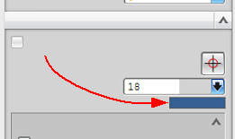
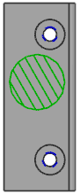

In the Part Navigator, expand the Back model view, then right-click the Circular Region item and select Edit.
In the PMI Region dialog box, in the Settings group, across from Color click the rectangular block of color.

In the Color dialog box, in the ID box, type 36 (Green) and press Enter, then click OK.
In the Settings group, under Crosshatch, in Angle type 120 and click OK.
The circular PMI region updates with the new color and crosshatch angle.

Close the part without saving.